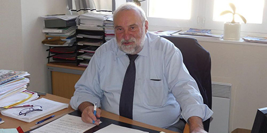

Pays Basque
Le maire de Boucau convalescent
Francis Gonzalez
Atteint par le coronavirus et hospitalisé à Bayonne depuis le 28 mars, le maire de Boucau, Francis Gonzalez a pu quitter le Centre hospitalier de la Côte basque, ce mardi 28 avril, pour rejoindre le centre médical cardio-respiratoire Toki-Eder de Cambo-les-Bains. " Il est arrivé, ce mardi vers 15 heures, affirme sa fille, Cathy Dufour-Gonzalez. Il nous a appelés et je l'ai senti soulagé d'avoir intégré cet établissement de soins de suites. Même s'il reste très fatigué, son moral est bon. Il devrait avoir, dans la journée de ce mercredi 29 avril, le programme de sa rééducation pour les prochains jours. "
Les proches de Francis Gonzalez ne sont, pour l'instant, pas autorisés à lui rendre visite. C'est le premier magistrat qui les contacte par téléphone. "Il est autonome et se déplace seul, poursuit sa fille. Il se réalimente normalement malgré la douleur causée par l'intubation qu'il a subie durant sa période en réanimation." Toujours, selon sa fille, Francis Gonzalez essaie de ne pas se pencher sur la gestion de sa commune de Boucau qu'il sait entre de bonnes mains grâce à son équipe. "Mais la tentation est grande. Il sait tout de même que pour l'instant, il doit se préserver."